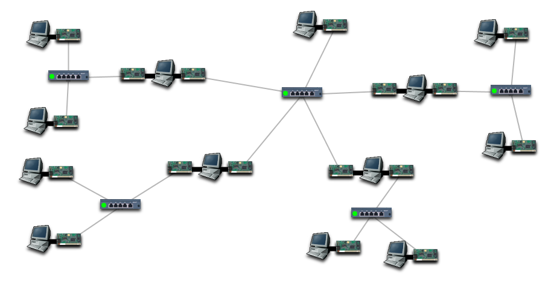

Creating and testing a very complex internet (five
subnets)
You are the administrator of a research laboratory.
There are 4 research teams, each of whom want their
own separate subnet, so that research teams cannot
accidentally hamper each others' progress. However,
they need to be linked to a central network which
provides facilities such as printers, mail servers, and
there are plans to link an Internet connection to this
central network.
To avoid any future conflict with IP addresses used on
the real Internet, we will use the 10.0.0.0/8 network
as our overall network number. When the time comes to
configure a real Internet connection, we will need to
revise these numbers, but they shouldn't cause other
problems when we do.
You have been involved in several meetings to discuss
the organisation, resulting in the physical layout
below.

Keeping within the 10.0.0.0/8 network, configure all
the computers so that they can communicate with each
other.
As this is a complex task, you will probably
make some mistakes, so test the network at each stage.
Reading the numbers that the connectivity test gives
you might be a little tricky (especially as there may
be upwards of a hundred IP address combinations listed.
Be prepared to use the Ping and Traceroute tools. A
typical strategy to get the whole network working might
be as follows:
-
Ensure that, within each subnet, each
computer can Ping each other computer.
If they can't, check that
- the hub has power
-
the IP address and
netmask are ok (for
both the sender and
the receiver)
-
check the physical
connections, by moving
components around.
If you move a hub and
the cables attached to
it don't move, then
you probably didn't
drag the cables close
enough to the hub for
them to be attached.
-
Now ensure that at least one computer
on a particular subnet can ping at
least one computer (other than a
gateway) on each other subnet.
-
Now if you test the connectivity, you
should only be left with a few pairs,
usually just mistakes in routing
tables, so you can go through and fix
those one by one.
-
As in reality, it helps to use a
consistent numbering scheme, and where
the problem allows, to use a simple
subnet mask, such as /16 or /24.
Administrators often draw diagrams of
their networks, and write notes about
them. IPSim doesn't simulate this,
because real computers don't show you
their IP address at a glance. You
generally have to type ipconfig or
ifconfig, depending on the platform, to
see the IP address. This doesn't stop
you from making a separate diagram on
paper, or taking a screenshot and
annotating it in a word processor or
paint program.
-
IPSim has a
scrapbook feature, accessible via the Tools menu, which might
be useful for making some notes. The scrapbook is not saved with your data,
and is not uploaded to the server during an assessment.
Back to Contents